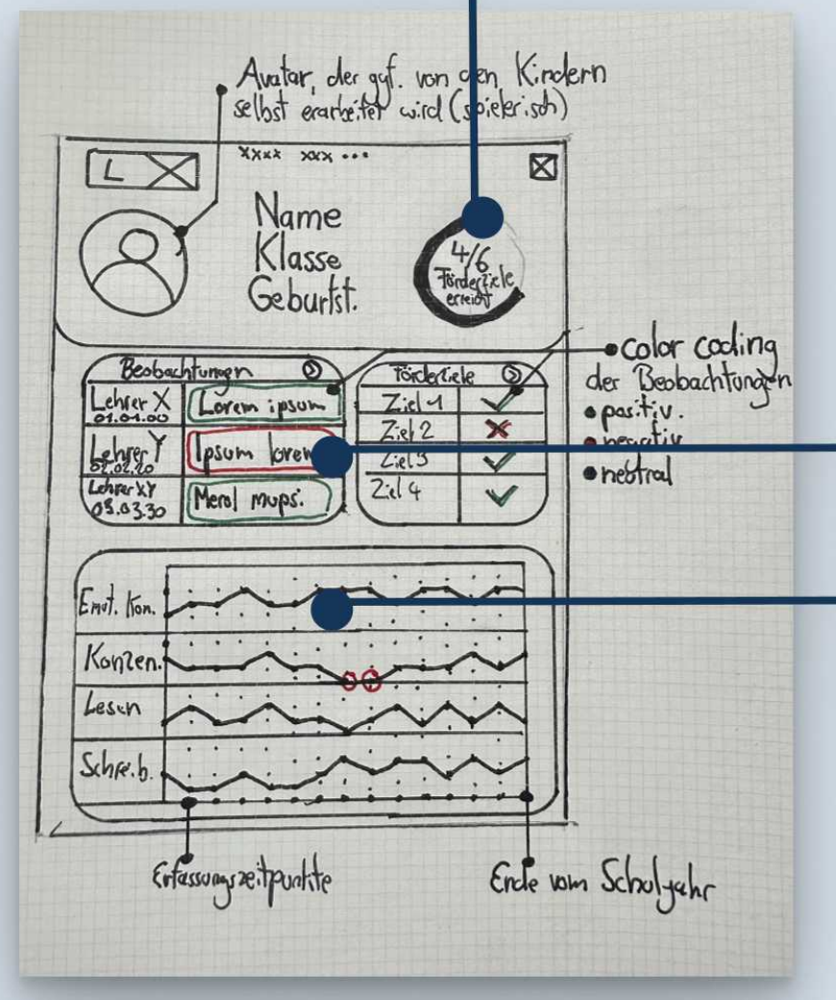

Kontext
Mit dieser Case Study möchte ich dich durch einen Designprozess mitnehmen - von der ersten Idee bis zum High-Fidelity-Layout - alles innerhalb eines einzigen Arbeitstages, im Rahmen meiner Bewerbung bei Inklusion-Digital.
Recherche
Zunächst habe ich mir einen Überblick über das bestehende System von Inklusion-Digital verschafft: öffentlich zugängliche Screens und verfügbare Informationen wanderten direkt in ein FigJam-Board, zusammen mit meinen ersten eigenen Gedanken.
Die zentrale Frage, die ein solches Interface beantworten muss: Welche Metriken führen zu einfacheren - und im besten Fall besseren - Entscheidungen in der Förderplanung? Wenn ein Dashboard eine Schülerin oder einen Schüler in den Mittelpunkt stellt, muss alles Gezeigte den Fortschritt auf einen Blick vermitteln.
Daraus wurde klar, was Splint eigentlich leisten sollte:
- Lernpotenziale sichtbar machen
- Individuelle Förderung vereinfachen
- Den Einsatz digitaler Tools barrierefrei gestalten
Rahmen festlegen
An diesem Punkt habe ich entschieden, das Projekt in der individualisierten Übersicht eines einzelnen Schülerprofils zu verorten.
Was bereits existiert
Die nächste Frage war, welche Informationen bereits vorhanden sind, auf denen sich aufbauen lässt: Beobachtungen, Fremdbeurteilungen, Anwesenheit, Kontaktdaten und der Förderplan mit seinen Zielen.
Nutzeranforderungen
Die eigentliche Frage ist, welche Metriken den Förderprozess möglichst unverzerrt abbilden. In einem echten Prozess würde ich damit direkt zu Lehrkräften gehen und die Kernmetriken gemeinsam in Interviews erarbeiten - hier habe ich stattdessen eine Abkürzung genommen und mich mit Claude zusammengesetzt. Nach etwas Hin und Her bin ich bei vier gelandet:
- Zielbearbeitungsquote - wie viele Förderziele aktiv bearbeitet werden
- Zielerreichungsquote - wie viele Förderziele erreicht wurden
- Teilnahmekonsistenz - wie regelmäßig teilgenommen wird
- Beobachteter Fortschritt - Fortschritt aus den Beobachtungen der Lehrkräfte
Dahinter stand eine Leitfrage: Was brauchen Lehrkräfte, um den Förderprozess schnell zu verstehen - und anzupassen?
Modellierung
Basierend auf den gesammelten Informationen und den Zielen, die ich für Splint gesetzt hatte, habe ich einen ersten Prototyp von Hand skizziert.

Designsystem
Darauf aufbauend habe ich ein Designsystem entwickelt, das Klarheit, Konsistenz und Nutzbarkeit in den Vordergrund stellt.